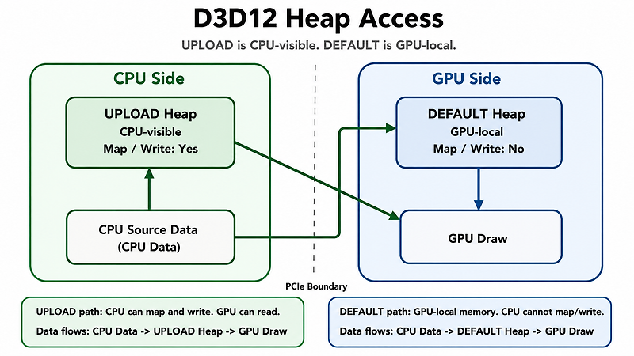

펄어비스 인턴 (2021.07 - 2021.12)
게임 엔진 1실
- DirectX 12 기반 펄어비스 자체 엔진의 디버깅 툴 및 애드온을 개발.
- Blender에서 작업한 Skinned Mesh를 자체 엔진의 3D Object 파일 형식으로 Import/Export하는 애드온을 개발.
Graphics / Engine Software Engineer
"Windows, Android, iOS 등 다양한 플랫폼을 지원하는 자체 엔진 개발 경험이 있는 그래픽스/엔진 소프트웨어 엔지니어입니다."

게임 엔진 1실
게임엔진개발팀 Render
도원암귀: 인페르노 렌더팀

WIYUL Develop Diary 커스텀 엔진에서 PCIe 병목 분석과 GPU-Local Resource Upload Path 개선 Sponza 씬 프로파일링 중 발견한 PCIe 병목을 분석하고, CPU-visible resource 구조를 GPU-local resource와 staging upload path로 개선한 과정을 정리했습니다. WIYUL Develop Diary 커스텀 렌더링 엔진에 Depth Pre-Pass 구현하기 자체 렌더링 엔진에 Depth Pre-Pass를 도입하며 Depth Texture 생성, Render Pass 분리, Early-Z 최적화 흐름을 엔진 구조에 맞춰 설계한 내용을 다룹니다. WIYUL Develop Diary [iOS] Shader 최적화 - Float Precision 모바일 GPU 환경에서 float과 half precision 선택이 ALU throughput, memory bandwidth, register pressure에 주는 영향을 실제 셰이더 최적화 관점에서 정리했습니다.